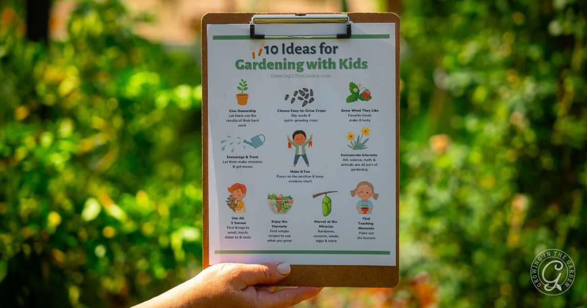
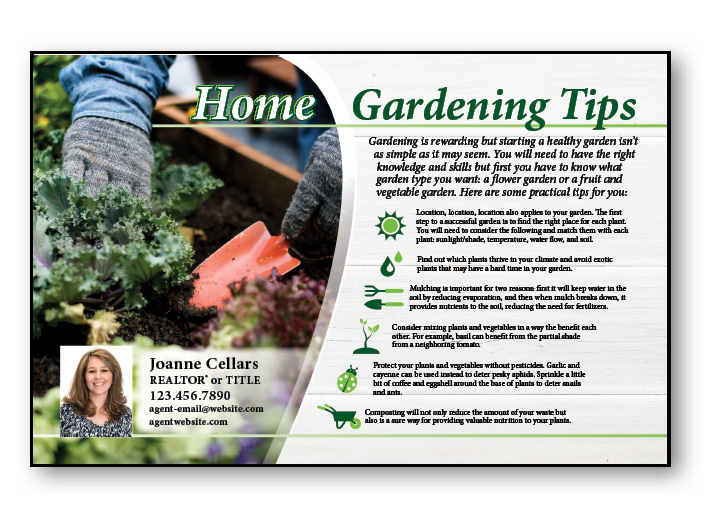

Tip and categories
- Gardening basics.
-
- They can be categorized in many ways garden types, plant types, growing advice, garden design, problem solving, seasonal tasks, and general gardening information many benefits, including physical exercise, mental health, teamwork, socialization, and education
- Plant types and care
- This category would provide guidance on specific types of plants, such as annuals, perennials, shrubs, bulbs, vegetables, herbs, and flowers. It would delve into the unique needs of each plant type, including ideal growing conditions, watering schedules, and pest and disease management tailored to their specific requirements.
- Garden problems
- This section would address common gardening challenges like pests, diseases, and weeds. It would offer organic solutions for pest control, disease prevention, and effective weeding techniques to maintain a healthy and productive garden.
- Seasonal gardening
- This category would provide a monthly or seasonal guide to gardening tasks, covering planting times for various crops, seasonal care tips, and advice on protecting plants during different weather conditions.
- Advanced techniques
- For experienced gardeners, this section would delve into more specialized techniques like hydroponics and aquaponics. It would explore working with microclimates within your garden, offering tips for maximizing yields in specific environmental conditions.

